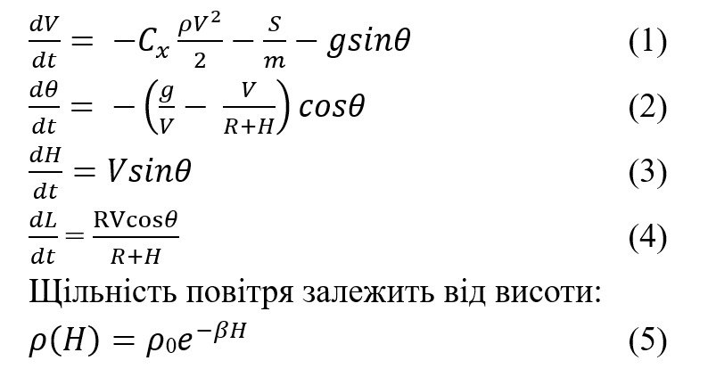

Актуальність теми
Актуальність теми зумовлена потребою надійного прогнозування траєкторій спуску апаратів з орбіти, що є критично важливим для забезпечення безпеки. Існування випадкових факторів, таких як аеродинамічний опір, вітер та інші атмосферні явища, ускладнює точне передбачення траєкторії.
Мета та завдання дослідження
Метою дослідження є розробка алгоритму та комп’ютерної програми для статистичного моделювання балістичної траєкторії спуску літального апарату в атмосфері Землі. Основне завдання — побудова середньої траєкторії та аналіз розсіювання при випадкових параметрах.
Математична модель
Поздовжній рух літального апарату описується системою чотирьох нелінійних диференціальних рівнянь, які враховують аеродинамічний опір, гравітацію та зміну кута нахилу. Щільність повітря моделюється як експоненційна функція від висоти:
Метод розв’язання
Для чисельного розв’язання задачі використовується метод Рунге-Кутти четвертого порядку, який забезпечує високу точність при моделюванні складних змін траєкторії в умовах атмосферного опору.
Очікувані результати
Очікується побудова середньої траєкторії польоту та аналіз розсіювання результатів моделювань. Результати можуть бути використані для покращення систем управління та передбачення поведінки об'єктів.